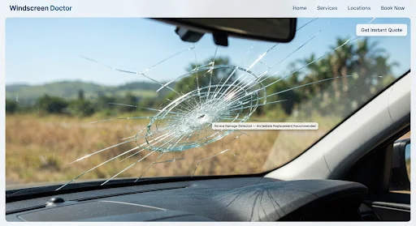

Damage
How to stop a stone chip spreading into a crack
What to do in the hours after impact, and when a chip is already a replacement job.
Guides
Practical South African guidance on damaged windscreens, mobile replacement and what to do next. Written for drivers, bakkie owners and plant operators — not for a waiting-room brochure.

Replacement
Chips, cracks, edge damage and shattered glass — the conditions that typically mean new glass.
Damage
What to do in the hours after impact, and when a chip is already a replacement job.

Mobile
Why the vehicle can stay at home, work or on site — including outside the metros.

Excavators, TLBs and loaders cannot easily visit a city workshop. Mobile replacement is built for that.

Visibility, structure and practical risk — without pretending to be a traffic lawyer.

Photo, vehicle details, glass identification, then a technician at the agreed location.
Send a photo and the vehicle or machine details. We quote for replacement, seven days a week, across South Africa.
Send a Photo